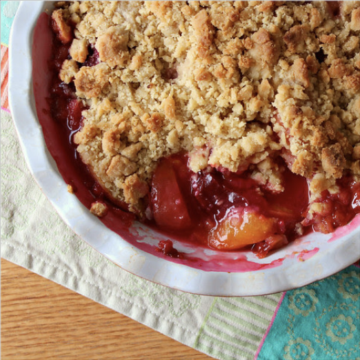

PEACH AND PLUM CRUMBLE

INGREDIENTS
⅓ cup whole rolled oats
⅓ cup chopped pecans
¼ cup flour (any kind): oat, almond, whole wheat, all purpose, etc.
⅓ cup brown sugar
½ teaspoon cinnamon
pinch of salt
3 tablespoons butter, vegan butter, or hardened coconut oil (plus more for the skillet)
4 peaches, sliced
4 plums, sliced
INSTRUCTIONS
-
Preheat the oven to 350°F and brush a medium cast iron skillet (or an 8"x8" baking dish), with a little coconut oil or butter.
-
Use a food processor to pulse the oats, pecans, flour, sugar, cinnamon, and salt together. Add the butter or coconut oil and give it a few short pulses until the the crumbly mixture clumps together. If it's too dry, add a little water, a teaspoon at a time. If it's too wet, add a little more flour.
-
Place the sliced peaches and plums into the skillet, sprinkle the crumble mixture on top and bake until the topping is golden brown and the fruit is soft, about 15-18 minutes.
-
Let cool slightly & serve warm with ice cream.